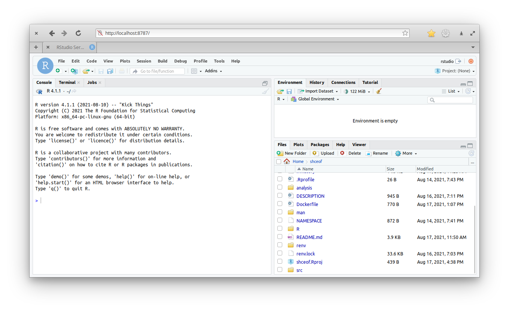

Setting up a transparent reproducible R environment with Docker + renv
For my PhD I’m currently writing a paper using rmarkdown.
Since I care about reproducibility, I’m using renv to register the versions of the R packages I use and to manage a local library that doesn’t affect the rest of my system.
With that, anyone who wants to reproduce my work could download all the code, run renv::restore() and have an R environment very similar to the one I use.
But while renv is nice, it doesn’t solve the whole problem, because system dependencies and even the R version itself can change. Another issue is that downloading and installing all the R packages can take a while. Like an hour or more. This is not a deal-breaker, but I’d like to do better. People trying to reproduce work are few and far between, so it’s important to make their lives as easy as possible.
Thanks to a recent episode of the R Weekly Highlights podcast, which pointed me to this post by Rahul Sangole on how to set up a reproducible environment with Docker, I have now a better alternative that not only is more reproducible, but it’s potentially much more user-friendly.
The core idea: Docker runs basically like a virtual machine inside your computer; you can control which R version you use and which packages are installed. You can also host a docker image on Docker Hub, so that anyone can download it and spin it up on their computer within minutes.
So I could create a docker image, do all the system dependencies and R package dependencies setup that can take an hour or more, and then publish that. If someone wants to reproduce my work, they can just get the image, run it, and they are ready. And not only that, but I could also add all the necessary data that also takes hours to download!
But there’s a trade-off here between reproducibility and transparency/reusability. I could run everything inside the docker image and be completely reproducible. But then the only way to access the code would be to download and run a heavy virtual machine using a particular technology that some people might not be used to or even have access to (for example, if they can’t install software on their work computers).
Since I want to be a little more on the transparent side of the spectrum, I want to host the code outside the container in a way that is accessible for anyone and use docker as an easier alternative. Here’s what I’ve come up with.
My Docker + renv + GitHub solution
At the heart of the docker image is the Dockerfile, a plain-text file with a series of commands that are then executed inside the image. Here’s the Dockerfile I built. I’ll explain how it works step by step:
# get the base image, the rocker/verse has R, RStudio and pandoc
FROM rocker/rstudio:4.1.1
# Get and install system dependencies
RUN R -e "install.packages('remotes')" \
&& R -e "remotes::install_github('r-hub/sysreqs')"
WORKDIR /home/rstudio/shceof
COPY DESCRIPTION DESCRIPTION
RUN sudo apt update \
&& R -e "system(sysreqs::sysreq_commands('DESCRIPTION', 'linux-x86_64-ubuntu-gcc'))" \
&& apt install -y libmagick++-dev
# Get and install R packages to local library
COPY renv.lock renv.lock
COPY renv/activate.R renv/activate.R
COPY .Rprofile .Rprofile
RUN chown -R rstudio . \
&& sudo -u rstudio R -e 'renv::restore()'
# Copy data to image
COPY analysis/data analysis/dataThe first line specifies the base image to use:
# get the base image, the rocker/verse has R, RStudio and pandoc
FROM rocker/rstudio:4.1.1In this case, I use rocker/rstudio, which comes with R and RStudio pre-installed. I also fixed the R version to 4.1.1 because is the same I’m using to work locally.
The next step is to make sure all the necessary system dependencies are installed. For that, I use the sysreqs package, which can take a DESCRIPTION file and build the command that installs all the dependencies. Of course, first you need to install it, which first requires the remotes package, because sysreqs is not on CRAN (yeah, it’s quite a ride).
# Get and install system dependencies
RUN R -e "install.packages('remotes')" \
&& R -e "remotes::install_github('r-hub/sysreqs')"Notice that each line starts with RUN followed by a command that could be run on the command-line.
For instance, R -e "install.packages('remotes')" executes install.packages('remotes') on an R session.
Then, I use the COPY command to grab the DESCRIPTION file form my local computer and put it in a file called DESCRIPTION in the docker container.
Where exactly?
In the working directory, that I previously set up with WORKDIR.
WORKDIR /home/rstudio/shceof
COPY DESCRIPTION DESCRIPTIONFinally use that DESCRIPTION file to install all the dependencies. For this project I also had to install libmagick++-dev, winch for some reason was necessary but not being installed.
RUN sudo apt update \
&& R -e "system(sysreqs::sysreq_commands('DESCRIPTION', 'linux-x86_64-ubuntu-gcc'))" \
&& apt install -y libmagick++-devAnd now that the image has all the required system dependencies, it’s time to install the R packages. Since I use renv, the list of packages, along with their versions and their sources are listed on the renv.lock file, so I need to grab that. I also need the activate.R file in the renv folder, which is a nice little script that autoinstalls the correct version of the renv package.
# Get and install R packages to local library
COPY renv.lock renv.lock
COPY renv/activate.R renv/activate.R
COPY .Rprofile .Rprofile
RUN chown -R rstudio . \
&& sudo -u rstudio R -e 'renv::restore()'Notice that I also had to change the owner of the files to the rstudio user and also restore the packages as the rstudio user.
At this point, the docker image has an R installation with the correct packages and the correct system dependencies installed. As a last, optional step, I copy the data folder from my local computer to the image.
# Copy data to image
COPY analysis/data analysis/dataIn my project, these are about 3 gb worth of data that are publicly available but are somewhat painful to get. One needs to create an account in the Climate Data Store website and then set up the credentials as environmental variables. Then, the process of requesting and downloading the data can take a couple of hours.
With this Dockerfile done, all it’s left is to build the thing with
docker build . -t name/projectNow that the image is built and in my machine, it’s time to publish it for anyone to download. You need to go to dockerhub, create an account and then log in locally with
docker loginFinally, just push the image with
docker push name/projectSince all the code is actually hosted outside the container, whoever wants to reproduce it will first have to clone the GitHub repository. Then, from the root of the repository, they’d run this:
docker run --rm -p 8787:8787 -e DISABLE_AUTH=true -v $(pwd):/home/rstudio/shceof -v /home/rstudio/shceof/renv -v /home/rstudio/shceof/analysis/data eliocamp/shceofThis woudl download the image if necessary and then run it. And then they’d go to localhost:8787 on any browser to be greeted with an RStudio session with all the things:

The argument -v $(pwd):/home/rstudio/shceof mounts the current working directory (the root of the repository) to /home/rstudio/shceof on the container.
But there’s the detail that /home/rstudio/shceof/renv and /home/rstudio/shceof/analysis/data were pre-populated at build time with files that are not available on github.
To make sure that these are not replaced by the versions in the repository (which would be almost empty and completely useless), I added this to the command:
-v /home/rstudio/shceof/renv -v /home/rstudio/shceof/analysis/dataFor some reason this functionally excludes these folders from the mount operation and the container then uses it’s own version of the folders.
I think that this setup stands in a nice place in the reproducibility – transparency spectrum. Using renv to manage the R dependencies makes it possible for all the code to be available publicly, including a more or less straightforward path to (approximately) replicate the computational environment. And docker stands as a complementary and potentially faster entry-point that doesn’t hide all of that behind another layer of abstraction.